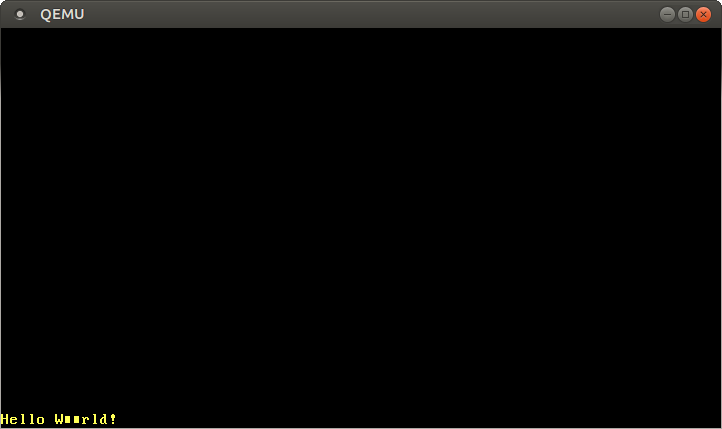
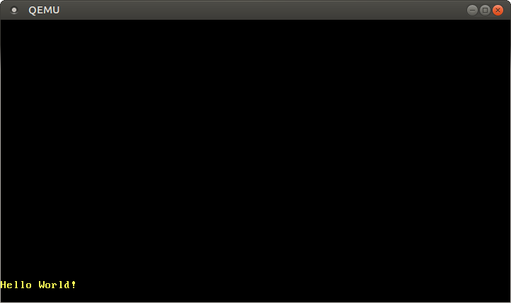

حالت متن VGA
محتوای ترجمه شده: این یک ترجمه از جامعه کاربران برای پست VGA Text Mode است. ممکن است ناقص، منسوخ شده یا دارای خطا باشد. لطفا هر گونه مشکل را در این ایشو گزارش دهید!
ترجمه توسط @hamidrezakp و @MHBahrampour.
حالت متن VGA یک روش ساده برای چاپ متن روی صفحه است. در این پست ، با قرار دادن همه موارد غیر ایمنی در یک ماژول جداگانه ، رابطی ایجاد می کنیم که استفاده از آن را ایمن و ساده می کند. همچنین پشتیبانی از ماکروی فرمتبندی راست را پیاده سازی میکنیم.
این بلاگ بصورت آزاد بر روی گیتهاب توسعه داده شده. اگر مشکل یا سوالی دارید، لطفا آنجا یک ایشو باز کنید. همچنین میتوانید در زیر این پست کامنت بگذارید. سورس کد کامل این پست را می توانید در شاخه post-01 پیدا کنید.
فهرست مطالب
🔗بافر متن VGA
برای چاپ یک کاراکتر روی صفحه در حالت متن VGA ، باید آن را در بافر متن سخت افزار VGA بنویسید. بافر متن VGA یک آرایه دو بعدی است که به طور معمول 25 ردیف و 80 ستون دارد که مستقیماً به صفحه نمایش داده(رندر) می شود. هر خانه آرایه یک کاراکتر صفحه نمایش را از طریق قالب زیر توصیف می کند:
| Bit(s) | Value |
|---|---|
| 0-7 | ASCII code point |
| 8-11 | Foreground color |
| 12-14 | Background color |
| 15 | Blink |
اولین بایت کاراکتری در کدگذاری ASCII را نشان می دهد که باید چاپ شود. اگر بخواهیم دقیق باشیم ، دقیقاً ASCII نیست ، بلکه مجموعه ای از کاراکترها به نام کد صفحه 437 با برخی کاراکتر های اضافی و تغییرات جزئی است. برای سادگی ، ما در این پست آنرا یک کاراکتر ASCII می نامیم.
بایت دوم نحوه نمایش کاراکتر را مشخص می کند. چهار بیت اول رنگ پیش زمینه را مشخص می کند ، سه بیت بعدی رنگ پس زمینه و بیت آخر اینکه کاراکتر باید چشمک بزند یا نه. رنگ های زیر موجود است:
| Number | Color | Number + Bright Bit | Bright Color |
|---|---|---|---|
| 0x0 | Black | 0x8 | Dark Gray |
| 0x1 | Blue | 0x9 | Light Blue |
| 0x2 | Green | 0xa | Light Green |
| 0x3 | Cyan | 0xb | Light Cyan |
| 0x4 | Red | 0xc | Light Red |
| 0x5 | Magenta | 0xd | Pink |
| 0x6 | Brown | 0xe | Yellow |
| 0x7 | Light Gray | 0xf | White |
بیت 4، بیت روشنایی است ، که به عنوان مثال آبی به آبی روشن تبدیل میکند. برای رنگ پس زمینه ، این بیت به عنوان بیت چشمک مورد استفاده قرار می گیرد.
بافر متن VGA از طریق ورودی/خروجی حافظهنگاشتی به آدرس0xb8000 قابل دسترسی است. این بدان معنی است که خواندن و نوشتن در آن آدرس به RAM دسترسی ندارد ، بلکه مستقیماً دسترسی به بافر متن در سخت افزار VGA دارد. این بدان معنی است که می توانیم آن را از طریق عملیات حافظه عادی در آن آدرس بخوانیم و بنویسیم.
توجه داشته باشید که ممکن است سخت افزار حافظهنگاشتی شده از تمام عملیات معمول RAM پشتیبانی نکند. به عنوان مثال ، یک دستگاه ممکن است فقط خواندن بایتی را پشتیبانی کرده و با خواندن u64 یک مقدار زباله را برگرداند. خوشبختانه بافر متن از خواندن و نوشتن عادی پشتیبانی می کند ، بنابراین مجبور نیستیم با آن به روش خاصی برخورد کنیم.
🔗یک ماژول راست
اکنون که از نحوه کار بافر VGA مطلع شدیم ، می توانیم یک ماژول Rust برای مدیریت چاپ ایجاد کنیم:
// in src/main.rs
mod vga_buffer;
برای محتوای این ماژول ما یک فایل جدید src/vga_buffer.rs ایجاد می کنیم. همه کدهای زیر وارد ماژول جدید ما می شوند (مگر اینکه طور دیگری مشخص شده باشد).
🔗رنگ ها
اول ، ما رنگ های مختلف را با استفاده از یک enum نشان می دهیم:
// in src/vga_buffer.rs
#[allow(dead_code)]
#[derive(Debug, Clone, Copy, PartialEq, Eq)]
#[repr(u8)]
pub enum Color {
Black = 0,
Blue = 1,
Green = 2,
Cyan = 3,
Red = 4,
Magenta = 5,
Brown = 6,
LightGray = 7,
DarkGray = 8,
LightBlue = 9,
LightGreen = 10,
LightCyan = 11,
LightRed = 12,
Pink = 13,
Yellow = 14,
White = 15,
}
ما در اینجا از enum مانند C برای مشخص کردن صریح عدد برای هر رنگ استفاده می کنیم. به دلیل ویژگی repr(u8) هر نوع enum به عنوان یک u8 ذخیره می شود. در واقع 4 بیت کافی است ، اما Rust نوع u4 ندارد.
به طور معمول کامپایلر برای هر نوع استفاده نشده اخطار می دهد. با استفاده از ویژگی #[allow(dead_code)] این هشدارها را برای enum Color غیرفعال می کنیم.
توسط deriving کردن تریتهای Copy, Clone, Debug, PartialEq, و Eq ما مفهوم کپی را برای نوع فعال کرده و آن را قابل پرینت کردن میکنیم.
برای نشان دادن یک کد کامل رنگ که رنگ پیش زمینه و پس زمینه را مشخص می کند ، یک نوع جدید بر روی u8 ایجاد می کنیم:
// in src/vga_buffer.rs
#[derive(Debug, Clone, Copy, PartialEq, Eq)]
#[repr(transparent)]
struct ColorCode(u8);
impl ColorCode {
fn new(foreground: Color, background: Color) -> ColorCode {
ColorCode((background as u8) << 4 | (foreground as u8))
}
}
ساختمان ColorCode شامل بایت کامل رنگ است که شامل رنگ پیش زمینه و پس زمینه است. مانند قبل ، ویژگی های Copy و Debug را برای آن derive می کنیم. برای اطمینان از اینکه ColorCode دقیقاً ساختار داده مشابه u8 دارد ، از ویژگی repr(transparent) استفاده می کنیم.
🔗بافر متن
اکنون می توانیم ساختمانهایی را برای نمایش یک کاراکتر صفحه و بافر متن اضافه کنیم:
// in src/vga_buffer.rs
#[derive(Debug, Clone, Copy, PartialEq, Eq)]
#[repr(C)]
struct ScreenChar {
ascii_character: u8,
color_code: ColorCode,
}
const BUFFER_HEIGHT: usize = 25;
const BUFFER_WIDTH: usize = 80;
#[repr(transparent)]
struct Buffer {
chars: [[ScreenChar; BUFFER_WIDTH]; BUFFER_HEIGHT],
}
از آنجا که ترتیب فیلدهای ساختمانهای پیش فرض در Rust تعریف نشده است ، به ویژگیrepr(C) نیاز داریم. این تضمین می کند که فیلد های ساختمان دقیقاً مانند یک ساختمان C ترسیم شده اند و بنابراین ترتیب درست را تضمین می کند. برای ساختمان Buffer ، ما دوباره از repr(transparent) استفاده می کنیم تا اطمینان حاصل شود که نحوه قرارگیری در حافظه دقیقا همان یک فیلد است.
برای نوشتن در صفحه ، اکنون یک نوع نویسنده ایجاد می کنیم:
// in src/vga_buffer.rs
pub struct Writer {
column_position: usize,
color_code: ColorCode,
buffer: &'static mut Buffer,
}
نویسنده همیشه در آخرین خط مینویسد و وقتی خط پر است (یا در \n) ، سطرها را به سمت بالا شیفت می دهد. فیلد column_position موقعیت فعلی در ردیف آخر را نگهداری می کند. رنگهای پیش زمینه و پس زمینه فعلی توسط color_code مشخص شده و یک ارجاع (رفرنس) به بافر VGA در buffer ذخیره می شود. توجه داشته باشید که ما در اینجا به طول عمر مشخصی نیاز داریم تا به کامپایلر بگوییم تا چه مدت این ارجاع معتبر است. ظول عمر 'static مشخص می کند که ارجاع برای کل مدت زمان اجرای برنامه معتبر باشد (که برای بافر متن VGA درست است).
🔗چاپ کردن
اکنون می توانیم از Writer برای تغییر کاراکترهای بافر استفاده کنیم. ابتدا یک متد برای نوشتن یک بایت ASCII ایجاد می کنیم:
// in src/vga_buffer.rs
impl Writer {
pub fn write_byte(&mut self, byte: u8) {
match byte {
b'\n' => self.new_line(),
byte => {
if self.column_position >= BUFFER_WIDTH {
self.new_line();
}
let row = BUFFER_HEIGHT - 1;
let col = self.column_position;
let color_code = self.color_code;
self.buffer.chars[row][col] = ScreenChar {
ascii_character: byte,
color_code,
};
self.column_position += 1;
}
}
}
fn new_line(&mut self) {/* TODO */}
}
اگر بایت، بایتِ خط جدید \n باشد، نویسنده چیزی چاپ نمی کند. در عوض متد new_line را فراخوانی می کند که بعداً آن را پیادهسازی خواهیم کرد. بایت های دیگر در حالت دوم match روی صفحه چاپ می شوند.
هنگام چاپ بایت ، نویسنده بررسی می کند که آیا خط فعلی پر است یا نه. در صورت پُر بودن، برای نوشتن در خط ، باید متد new_line صدا زده شود. سپس یک ScreenChar جدید در بافر در موقعیت فعلی می نویسد. سرانجام ، موقعیت ستون فعلی یکی افزایش مییابد.
برای چاپ کل رشته ها، می توانیم آنها را به بایت تبدیل کرده و یکی یکی چاپ کنیم:
// in src/vga_buffer.rs
impl Writer {
pub fn write_string(&mut self, s: &str) {
for byte in s.bytes() {
match byte {
// printable ASCII byte or newline
0x20..=0x7e | b'\n' => self.write_byte(byte),
// not part of printable ASCII range
_ => self.write_byte(0xfe),
}
}
}
}
بافر متن VGA فقط از ASCII و بایت های اضافی کد صفحه 437 پشتیبانی می کند. رشته های راست به طور پیش فرض UTF-8 هستند ، بنابراین ممکن است حاوی بایت هایی باشند که توسط بافر متن VGA پشتیبانی نمی شوند. ما از یک match برای تفکیک بایت های قابل چاپ ASCII (یک خط جدید یا هر چیز دیگری بین یک کاراکتر فاصله و یک کاراکتر~) و بایت های غیر قابل چاپ استفاده می کنیم. برای بایت های غیر قابل چاپ ، یک کاراکتر ■ چاپ می کنیم که دارای کد شانزدهای (hex) 0xfe بر روی سخت افزار VGA است.
🔗امتحاناش کنید!
برای نوشتن چند کاراکتر بر روی صفحه ، می توانید یک تابع موقتی ایجاد کنید:
// in src/vga_buffer.rs
pub fn print_something() {
let mut writer = Writer {
column_position: 0,
color_code: ColorCode::new(Color::Yellow, Color::Black),
buffer: unsafe { &mut *(0xb8000 as *mut Buffer) },
};
writer.write_byte(b'H');
writer.write_string("ello ");
writer.write_string("Wörld!");
}
ابتدا یک Writer جدید ایجاد می کند که به بافر VGA در 0xb8000 اشاره دارد. سینتکس این ممکن است کمی عجیب به نظر برسد: اول ، ما عدد صحیح 0xb8000 را به عنوان اشاره گر خام قابل تغییر در نظر می گیریم. سپس با dereferencing کردن آن (از طریق “*”) و بلافاصله ارجاع مجدد (از طریق &mut) آن را به یک مرجع قابل تغییر تبدیل می کنیم. این تبدیل به یک بلوک غیرایمن احتیاج دارد ، زیرا کامپایلر نمی تواند صحت اشارهگر خام را تضمین کند.
سپس بایت b'H' را روی آن می نویسد. پیشوند b یک بایت لیترال ایجاد می کند ، که بیانگر یک کاراکتر ASCII است. با نوشتن رشته های "ello " و "Wörld!" ، ما متد write_string و واکنش به کاراکترهای غیر قابل چاپ را آزمایش می کنیم. برای دیدن خروجی ، باید تابع print_something را از تابع _start فراخوانی کنیم:
// in src/main.rs
#[no_mangle]
pub extern "C" fn _start() -> ! {
vga_buffer::print_something();
loop {}
}
اکنون هنگامی که ما پروژه را اجرا می کنیم ، باید یک Hello W■■rld! در گوشه سمت چپ پایین صفحه به رنگ زرد چاپ شود:

توجه داشته باشید که ö به عنوان دو کاراکتر ■ چاپ شده است. به این دلیل که ö با دو بایت در UTF-8 نمایش داده می شود ، که هر دو در محدوده قابل چاپ ASCII قرار نمی گیرند. در حقیقت ، این یک ویژگی اساسی UTF-8 است: هر بایت از مقادیر چند بایتی هرگز ASCII معتبر نیستند.
🔗فرّار
ما الان دیدیم که پیام ما به درستی چاپ شده است. با این حال ، ممکن است با کامپایلرهای آینده Rust که به صورت تهاجمی تری(aggressively) بهینه می شوند ، کار نکند.
مشکل این است که ما فقط به Buffer می نویسیم و هرگز از آن نمیخوانیم. کامپایلر نمی داند که ما واقعاً به حافظه بافر VGA (به جای RAM معمولی) دسترسی پیدا می کنیم و در مورد اثر جانبی آن یعنی نمایش برخی کاراکتر ها روی صفحه چیزی نمی داند. بنابراین ممکن است تصمیم بگیرد که این نوشتن ها غیرضروری هستند و می تواند آن را حذف کند. برای جلوگیری از این بهینه سازی اشتباه ، باید این نوشتن ها را به عنوان فرّار مشخص کنیم. این به کامپایلر می گوید که نوشتن عوارض جانبی دارد و نباید بهینه شود.
به منظور استفاده از نوشتن های فرار برای بافر VGA ، ما از کتابخانه volatile استفاده می کنیم. این crate (بسته ها در جهان Rust اینطور نامیده میشوند) نوع Volatile را که یک نوع wrapper هست با متد های read و write فراهم می کند. این متد ها به طور داخلی از توابع read_volatile و write_volatile کتابخانه اصلی استفاده می کنند و بنابراین تضمین می کنند که خواندن/ نوشتن با بهینه شدن حذف نمیشوند.
ما می توانیم وابستگی به کرت (crate) volatile را بوسیله اضافه کردن آن به بخش dependencies (وابستگی های) Cargo.toml اضافه کنیم:
# in Cargo.toml
[dependencies]
volatile = "0.2.6"
0.2.6 شماره نسخه معنایی است. برای اطلاعات بیشتر ، به راهنمای تعیین وابستگی ها مستندات کارگو (cargo) مراجعه کنید.
بیایید از آن برای نوشتن فرار در بافر VGA استفاده کنیم. نوع Buffer خود را به صورت زیر بروزرسانی می کنیم:
// in src/vga_buffer.rs
use volatile::Volatile;
struct Buffer {
chars: [[Volatile<ScreenChar>; BUFFER_WIDTH]; BUFFER_HEIGHT],
}
به جای ScreenChar ، ما اکنون از Volatile<ScreenChar> استفاده می کنیم. (نوع Volatile، generic است و می تواند (تقریباً) هر نوع را در خود قرار دهد). این اطمینان می دهد که ما به طور تصادفی نمی توانیم از طریق نوشتن “عادی” در آن بنویسیم. در عوض ، اکنون باید از متد write استفاده کنیم.
این بدان معنی است که ما باید متد Writer::write_byte خود را به روز کنیم:
// in src/vga_buffer.rs
impl Writer {
pub fn write_byte(&mut self, byte: u8) {
match byte {
b'\n' => self.new_line(),
byte => {
...
self.buffer.chars[row][col].write(ScreenChar {
ascii_character: byte,
color_code,
});
...
}
}
}
...
}
به جای انتساب عادی با استفاده از = ، اکنون ما از متد write استفاده می کنیم. این تضمین می کند که کامپایلر هرگز این نوشتن را بهینه نخواهد کرد.
🔗ماکروهای قالببندی
خوب است که از ماکروهای قالب بندی Rust نیز پشتیبانی کنید. به این ترتیب ، می توانیم انواع مختلفی مانند عدد صحیح یا شناور را به راحتی چاپ کنیم. برای پشتیبانی از آنها ، باید تریت core::fmt::Write را پیاده سازی کنیم. تنها متد مورد نیاز این تریت ،write_str است که کاملاً شبیه به متد write_str ما است ، فقط با نوع بازگشت fmt::Result:
// in src/vga_buffer.rs
use core::fmt;
impl fmt::Write for Writer {
fn write_str(&mut self, s: &str) -> fmt::Result {
self.write_string(s);
Ok(())
}
}
Ok(()) فقط نتیجه Ok حاوی نوع () است.
اکنون ما می توانیم از ماکروهای قالب بندی داخلی راست یعنی write!/writeln! استفاده کنیم:
// in src/vga_buffer.rs
pub fn print_something() {
use core::fmt::Write;
let mut writer = Writer {
column_position: 0,
color_code: ColorCode::new(Color::Yellow, Color::Black),
buffer: unsafe { &mut *(0xb8000 as *mut Buffer) },
};
writer.write_byte(b'H');
writer.write_string("ello! ");
write!(writer, "The numbers are {} and {}", 42, 1.0/3.0).unwrap();
}
حالا شما باید یک Hello! The numbers are 42 and 0.3333333333333333 در پایین صفحه ببینید. فراخوانی write! یک Result را برمی گرداند که در صورت عدم استفاده باعث هشدار می شود ، بنابراین ما تابع unwrap را روی آن فراخوانی می کنیم که در صورت بروز خطا پنیک می کند. این در مورد ما مشکلی ندارد ، زیرا نوشتن در بافر VGA هرگز شکست نمیخورد.
🔗خطوط جدید
در حال حاضر ، ما از خطوط جدید و کاراکتر هایی که دیگر در خط نمی گنجند چشم پوشی می کنیم. درعوض ما می خواهیم هر کاراکتر را یک خط به بالا منتقل کنیم (خط بالا حذف می شود) و دوباره از ابتدای آخرین خط شروع کنیم. برای انجام این کار ، ما یک پیاده سازی برای متد new_line در Writer اضافه می کنیم:
// in src/vga_buffer.rs
impl Writer {
fn new_line(&mut self) {
for row in 1..BUFFER_HEIGHT {
for col in 0..BUFFER_WIDTH {
let character = self.buffer.chars[row][col].read();
self.buffer.chars[row - 1][col].write(character);
}
}
self.clear_row(BUFFER_HEIGHT - 1);
self.column_position = 0;
}
fn clear_row(&mut self, row: usize) {/* TODO */}
}
ما تمام کاراکترهای صفحه را پیمایش می کنیم و هر کاراکتر را یک ردیف به بالا شیفت می دهیم. توجه داشته باشید که علامت گذاری دامنه (..) فاقد مقدار حد بالا است. ما همچنین سطر 0 را حذف می کنیم (اول محدوده از “1” شروع می شود) زیرا این سطر است که از صفحه به بیرون شیفت می شود.
برای تکمیل کد newline ، متد clear_row را اضافه می کنیم:
// in src/vga_buffer.rs
impl Writer {
fn clear_row(&mut self, row: usize) {
let blank = ScreenChar {
ascii_character: b' ',
color_code: self.color_code,
};
for col in 0..BUFFER_WIDTH {
self.buffer.chars[row][col].write(blank);
}
}
}
این متد با جایگزینی تمام کاراکترها با یک کاراکتر فاصله ، یک سطر را پاک می کند.
🔗یک رابط گلوبال
برای فراهم کردن یک نویسنده گلوبال که بتواند به عنوان رابط از سایر ماژول ها بدون حمل نمونه Writer در اطراف استفاده شود ، سعی می کنیم یک WRITER ثابت ایجاد کنیم:
// in src/vga_buffer.rs
pub static WRITER: Writer = Writer {
column_position: 0,
color_code: ColorCode::new(Color::Yellow, Color::Black),
buffer: unsafe { &mut *(0xb8000 as *mut Buffer) },
};
با این حال ، اگر سعی کنیم اکنون آن را کامپایل کنیم ، خطاهای زیر رخ می دهد:
error[E0015]: calls in statics are limited to constant functions, tuple structs and tuple variants
--> src/vga_buffer.rs:7:17
|
7 | color_code: ColorCode::new(Color::Yellow, Color::Black),
| ^^^^^^^^^^^^^^^^^^^^^^^^^^^^^^^^^^^^^^^^^^^
error[E0396]: raw pointers cannot be dereferenced in statics
--> src/vga_buffer.rs:8:22
|
8 | buffer: unsafe { &mut *(0xb8000 as *mut Buffer) },
| ^^^^^^^^^^^^^^^^^^^^^^^^^^^^^^ dereference of raw pointer in constant
error[E0017]: references in statics may only refer to immutable values
--> src/vga_buffer.rs:8:22
|
8 | buffer: unsafe { &mut *(0xb8000 as *mut Buffer) },
| ^^^^^^^^^^^^^^^^^^^^^^^^^^^^^^ statics require immutable values
error[E0017]: references in statics may only refer to immutable values
--> src/vga_buffer.rs:8:13
|
8 | buffer: unsafe { &mut *(0xb8000 as *mut Buffer) },
| ^^^^^^^^^^^^^^^^^^^^^^^^^^^^^^^^^^^^^^^^^ statics require immutable values
برای فهمیدن آنچه در اینجا اتفاق می افتد ، باید بدانیم که ثابت ها(Statics) در زمان کامپایل مقداردهی اولیه می شوند ، برخلاف متغیرهای عادی که در زمان اجرا مقداردهی اولیه می شوند. مولفهای(component) از کامپایلر Rust که چنین عبارات مقداردهی اولیه را ارزیابی می کند ، “const evaluator” نامیده می شود. عملکرد آن هنوز محدود است ، اما کارهای گسترده ای برای گسترش آن در حال انجام است ، به عنوان مثال در “Allow panicking in constants” RFC.
مسئله در مورد ColorCode::new با استفاده از توابع const functions قابل حل است ، اما مشکل اساسی اینجاست که Rust’s const evaluator قادر به تبدیل اشارهگرهای خام به رفرنس در زمان کامپایل نیست. شاید روزی جواب دهد ، اما تا آن زمان ، ما باید راه حل دیگری پیدا کنیم.
🔗استاتیکهای تنبل (Lazy Statics)
یکبار مقداردهی اولیه استاتیکها با توابع غیر ثابت یک مشکل رایج در راست است. خوشبختانه ، در حال حاضر راه حل خوبی در کرتی به نام lazy_static وجود دارد. این کرت ماکرو lazy_static! را فراهم می کند که یک استاتیک را با تنبلی مقداردهی اولیه می کند. به جای محاسبه مقدار آن در زمان کامپایل ، استاتیک به تنبلی هنگام اولین دسترسی به آن، خود را مقداردهی اولیه میکند. بنابراین ، مقداردهی اولیه در زمان اجرا اتفاق می افتد تا کد مقدار دهی اولیه پیچیده و دلخواه امکان پذیر باشد.
بیایید کرت lazy_static را به پروژه خود اضافه کنیم:
# in Cargo.toml
[dependencies.lazy_static]
version = "1.0"
features = ["spin_no_std"]
ما به ویژگی spin_no_std نیاز داریم ، زیرا به کتابخانه استاندارد پیوند نمی دهیم.
با استفاده از lazy_static ، می توانیم WRITER ثابت خود را بدون مشکل تعریف کنیم:
// in src/vga_buffer.rs
use lazy_static::lazy_static;
lazy_static! {
pub static ref WRITER: Writer = Writer {
column_position: 0,
color_code: ColorCode::new(Color::Yellow, Color::Black),
buffer: unsafe { &mut *(0xb8000 as *mut Buffer) },
};
}
با این حال ، این WRITER بسیار بی فایده است زیرا غیر قابل تغییر است. این بدان معنی است که ما نمی توانیم چیزی در آن بنویسیم (از آنجا که همه متد های نوشتن &mut self را در ورودی میگیرند). یک راه حل ممکن استفاده از استاتیک قابل تغییر است. اما پس از آن هر خواندن و نوشتن آن ناامن (unsafe) است زیرا می تواند به راحتی باعث data race و سایر موارد بد باشد. استفاده از static mut بسیار نهی شده است ، حتی پیشنهادهایی برای حذف آن وجود داشت. اما گزینه های دیگر چیست؟ ما می توانیم سعی کنیم از یک استاتیک تغییرناپذیر با نوع سلول مانند RefCell یا حتی UnsafeCell استفاده کنیم که تغییر پذیری داخلی را فراهم می کند. اما این انواع Sync نیستند (با دلیل کافی) ، بنابراین نمی توانیم از آنها در استاتیک استفاده کنیم.
🔗Spinlocks
برای دستیابی به قابلیت تغییرپذیری داخلی همزمان (synchronized) ، کاربران کتابخانه استاندارد می توانند از Mutex استفاده کنند. هنگامی که منبع از قبل قفل شده است ، با مسدود کردن رشته ها ، امکان انحصار متقابل را فراهم می کند. اما هسته اصلی ما هیچ پشتیبانی از مسدود کردن یا حتی مفهومی از نخ ها ندارد ، بنابراین ما هم نمی توانیم از آن استفاده کنیم. با این وجود یک نوع کاملاً پایهای از mutex در علوم کامپیوتر وجود دارد که به هیچ ویژگی سیستم عاملی نیاز ندارد: spinlock. به جای مسدود کردن ، نخ ها سعی می کنند آن را بارها و بارها در یک حلقه قفل کنند و بنابراین زمان پردازنده را می سوزانند تا دوباره mutex آزاد شود.
برای استفاده از spinning mutex ، می توانیم کرت spin را به عنوان یک وابستگی اضافه کنیم:
# in Cargo.toml
[dependencies]
spin = "0.5.2"
سپس می توانیم از spinning Mutex برای افزودن تغییر پذیری داخلی امن به WRITER استاتیک خود استفاده کنیم:
// in src/vga_buffer.rs
use spin::Mutex;
...
lazy_static! {
pub static ref WRITER: Mutex<Writer> = Mutex::new(Writer {
column_position: 0,
color_code: ColorCode::new(Color::Yellow, Color::Black),
buffer: unsafe { &mut *(0xb8000 as *mut Buffer) },
});
}
اکنون می توانیم تابع print_something را حذف کرده و مستقیماً از تابع_start خود چاپ کنیم:
// in src/main.rs
#[no_mangle]
pub extern "C" fn _start() -> ! {
use core::fmt::Write;
vga_buffer::WRITER.lock().write_str("Hello again").unwrap();
write!(vga_buffer::WRITER.lock(), ", some numbers: {} {}", 42, 1.337).unwrap();
loop {}
}
برای اینکه بتوانیم از توابع آن استفاده کنیم ، باید تریت fmt::Write را وارد کنیم.
🔗ایمنی
توجه داشته باشید که ما فقط یک بلوک ناامن در کد خود داریم که برای ایجاد رفرنس Buffer با اشاره به 0xb8000 لازم است. پس از آن ، تمام عملیات ایمن هستند. Rust به طور پیش فرض از بررسی مرزها در دسترسی به آرایه استفاده می کند ، بنابراین نمی توانیم به طور اتفاقی خارج از بافر بنویسیم. بنابراین ، ما شرایط مورد نیاز را در سیستم نوع انجام میدهیم و قادر به ایجاد یک رابط ایمن به خارج هستیم.
🔗یک ماکروی println
اکنون که یک نویسنده گلوبال داریم ، می توانیم یک ماکرو println اضافه کنیم که می تواند از هر کجا در کد استفاده شود. سینتکس ماکروی راست کمی عجیب است ، بنابراین ما سعی نمی کنیم ماکرو را از ابتدا بنویسیم. در عوض به سورس ماکروی println! در کتابخانه استاندارد نگاه می کنیم:
#[macro_export]
macro_rules! println {
() => (print!("\n"));
($($arg:tt)*) => (print!("{}\n", format_args!($($arg)*)));
}
ماکروها از طریق یک یا چند قانون تعریف می شوند که شبیه بازوهای match هستند. ماکرو println دارای دو قانون است: اولین قانون برای فراخوانی های بدون آرگمان است (به عنوان مثال: println!()) ، که به print!("\n") گسترش می یابد، بنابراین فقط یک خط جدید را چاپ می کند. قانون دوم برای فراخوانی هایی با پارامترهایی مانند println!("Hello") یا println!("Number: {}", 4) است. همچنین با فراخوانی کل آرگومان ها و یک خط جدید \n اضافی در انتها ، به فراخوانی ماکرو print! گسترش می یابد.
ویژگی #[macro_export] ماکرو را برای کل کرت (نه فقط ماژولی که تعریف شده است) و کرت های خارجی در دسترس قرار می دهد. همچنین ماکرو را در ریشه کرت قرار می دهد ، به این معنی که ما باید ماکرو را به جای std::macros::println از طریق use std::println وارد کنیم.
ماکرو print! به این صورت تعریف می شود:
#[macro_export]
macro_rules! print {
($($arg:tt)*) => ($crate::io::_print(format_args!($($arg)*)));
}
ماکرو به فراخوانی تابع _print در ماژول io گسترش می یابد. متغیر $crate تضمین می کند که ماکرو هنگام گسترش در std در زمان استفاده در کرت های دیگر، در خارج از کرت std نیز کار می کند.
ماکرو format_args از آرگمان های داده شده یک نوع fmt::Arguments را می سازد که به _print ارسال می شود. تابع _print از کتابخانه استاندارد،print_to را فراخوانی می کند ، که بسیار پیچیده است زیرا از دستگاه های مختلف Stdout پشتیبانی می کند. ما به این پیچیدگی احتیاج نداریم زیرا فقط می خواهیم در بافر VGA چاپ کنیم.
برای چاپ در بافر VGA ، ما فقط ماکروهای println! و print! را کپی می کنیم ، اما آنها را اصلاح می کنیم تا از تابع _print خود استفاده کنیم:
// in src/vga_buffer.rs
#[macro_export]
macro_rules! print {
($($arg:tt)*) => ($crate::vga_buffer::_print(format_args!($($arg)*)));
}
#[macro_export]
macro_rules! println {
() => ($crate::print!("\n"));
($($arg:tt)*) => ($crate::print!("{}\n", format_args!($($arg)*)));
}
#[doc(hidden)]
pub fn _print(args: fmt::Arguments) {
use core::fmt::Write;
WRITER.lock().write_fmt(args).unwrap();
}
چیزی که ما از تعریف اصلی println تغییر دادیم این است که فراخوانی ماکرو print! را با پیشوند $crate انجام می دهیم. این تضمین می کند که اگر فقط می خواهیم از println استفاده کنیم ، نیازی به وارد کردن ماکرو print! هم نداشته باشیم.
مانند کتابخانه استاندارد ، ویژگی #[macro_export] را به هر دو ماکرو اضافه می کنیم تا در همه جای کرت ما در دسترس باشند. توجه داشته باشید که این ماکروها را در فضای نام ریشه کرت قرار می دهد ، بنابراین وارد کردن آنها از طریق use crate::vga_buffer::println کار نمی کند. در عوض ، ما باید use crate::println را استفاده کنیم.
تابع _print نویسنده (WRITER) استاتیک ما را قفل می کند و متدwrite_fmt را روی آن فراخوانی می کند. این متد از تریت Write است ، ما باید این تریت را وارد کنیم. اگر چاپ موفقیت آمیز نباشد ، unwrap() اضافی در انتها باعث پنیک میشود. اما از آنجا که ما همیشه Ok را در write_str برمی گردانیم ، این اتفاق نمی افتد.
از آنجا که ماکروها باید بتوانند از خارج از ماژول، _print را فراخوانی کنند، تابع باید عمومی (public) باشد. با این حال ، از آنجا که این جزئیات پیاده سازی را خصوصی (private) در نظر می گیریم، ویژگی doc(hidden) را اضافه می کنیم تا از مستندات تولید شده پنهان شود.
🔗Hello World توسط println
اکنون می توانیم از println در تابع _start استفاده کنیم:
// in src/main.rs
#[no_mangle]
pub extern "C" fn _start() {
println!("Hello World{}", "!");
loop {}
}
توجه داشته باشید که ما مجبور نیستیم ماکرو را در تابع اصلی وارد کنیم ، زیرا در حال حاضر در فضای نام ریشه موجود است.
همانطور که انتظار می رفت ، اکنون یک “Hello World!” روی صفحه مشاهده می کنیم:

🔗چاپ پیام های پنیک
اکنون که ماکرو println را داریم ، می توانیم از آن در تابع پنیک برای چاپ پیام و مکان پنیک استفاده کنیم:
// in main.rs
/// This function is called on panic.
#[panic_handler]
fn panic(info: &PanicInfo) -> ! {
println!("{}", info);
loop {}
}
اکنون وقتی که panic!("Some panic message"); را در تابع _start خود اضافه میکنیم ، خروجی زیر را می گیریم:

بنابراین ما نه تنها میدانیم که یک پنیک رخ داده است ، بلکه پیام پنیک و اینکه در کجای کد رخ داده است را نیز میدانیم.
🔗خلاصه
در این پست با ساختار بافر متن VGA و نحوه نوشتن آن از طریق نگاشت حافظه در آدرس 0xb8000 آشنا شدیم. ما یک ماژول راست ایجاد کردیم که عدم امنیت نوشتن را در این بافر نگاشت حافظه شده را محصور می کند و یک رابط امن و راحت به خارج ارائه می دهد.
همچنین دیدیم که به لطف کارگو ، اضافه کردن وابستگی به کتابخانه های دیگران چقدر آسان است. دو وابستگی که اضافه کردیم ، lazy_static وspin ، در توسعه سیستم عامل بسیار مفید هستند و ما در پست های بعدی از آنها در مکان های بیشتری استفاده خواهیم کرد.
🔗بعدی چیست؟
در پست بعدی نحوه راه اندازی چارچوب تست واحد (Unit Test) راست توضیح داده شده است. سپس از این پست چند تست واحد اساسی برای ماژول بافر VGA ایجاد خواهیم کرد.
نظرات
Do you have a problem, want to share feedback, or discuss further ideas? Feel free to leave a comment here! Please stick to English and follow Rust's code of conduct. This comment thread directly maps to a discussion on GitHub, so you can also comment there if you prefer.
Instead of authenticating the giscus application, you can also comment directly on GitHub.
لطفا نظرات خود را در صورت امکان به انگلیسی بنویسید.